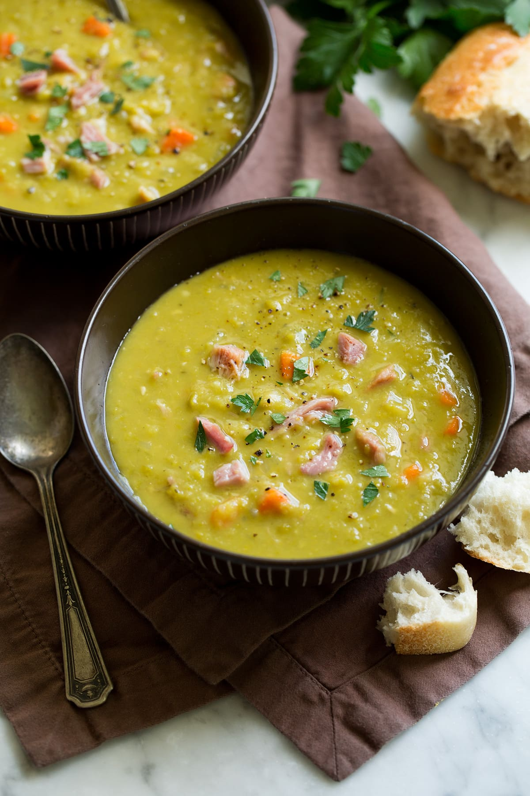

Split Pea Soup

Description
There's nothing like classic split pea soup to satisfy your comfort food craving.
This split pea soup recipe is complete with ham, hearty veggies, and simple seasonings.
Ingredients
- Dried split peas: Find dried split peas on the dried beans and rice aisle.
- Cold water: Soak the peas for at least eight hours in cold water. You'll also need two quarts of cold water for the soup itself.
- Ham bone: A ham bone is cooked with the peas, adding a wonderfully meaty flavor.
- Vegetables: You'll need two onions, three carrots, three celery stalks, and one potato.
- Spices and seasonings: This split pea soup recipe is seasoned with salt, black pepper, and dried marjoram.
Steps
- Soak, drain, and rinse the split peas. Place them in a pot.
- Add the water, ham bone, onions, and seasonings to the pot.
- Bring to a boil, then simmer for about 90 minutes.
- Remove the meat from the ham bone and return the meat to the pot.
- Add the vegetables and cook until the vegetables are tender.